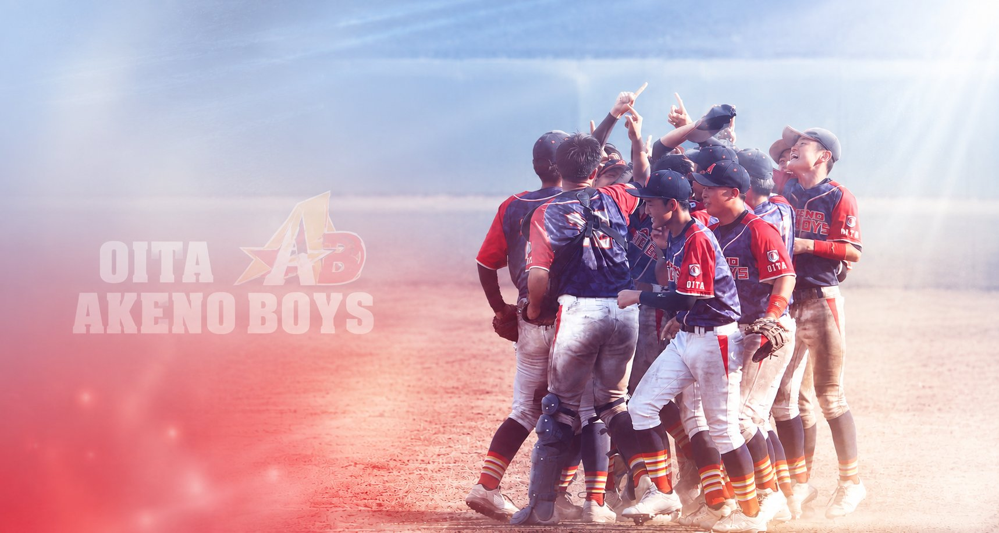

日本少年野球連盟 九州ブロック 大分県支部
大分明野ボーイズ
大分市を拠点に活動する中学硬式野球チームです。 全国の舞台を目指し、仲間とともに白球を追いかけています。

読み込み中…
試合速報をすべて見る
過去のスケジュール
大分明野ボーイズは、大分市を拠点に活動する中学生の硬式野球チームです。 日本少年野球連盟（ボーイズリーグ）九州ブロック 大分県支部に所属し、 大分市内を中心に、近隣の市から通う選手も在籍しています。
このサイトでは、次の内容を掲載しています。
このサイトの試合速報・戦績・スケジュールの表示には JavaScript を使用しています。 ブラウザの設定で JavaScript を有効にしてご覧ください。